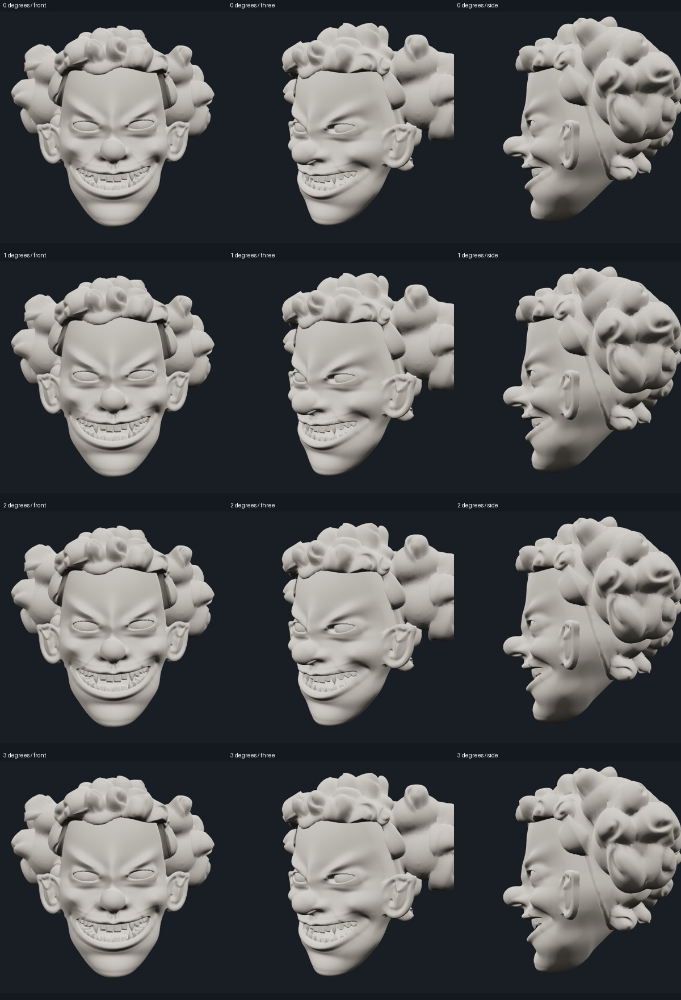

Candidate A · small jaw review
Interactive frozen reference and prototype
0° is the approved wide-grin rest. Each row shows 0°, 1°, 2°, then 3° from front, three-quarter and profile. Original surface and tooth identity retained; no Local-17 skin or dental reseating.

Actual opening / closing preview
Recorded browser preview, not synthetic pose interpolation footage. Cloud capture is not a physical-device frame-rate certification.
Audit and next-step limit
The original closed triangle mesh supports this bounded jaw feasibility trial. It has no authored facial loops or weights, so no larger mouth poses or full expression rig are approved by this test. For those, use a carefully authored Candidate-A-specific control cage and preserve the original rendered rest surface, with separate visual gates.
Reuse/replacement audit · Static rest checks · Return-to-rest checks · Motion and triangle-orientation checks
No existing character viewer, checkpoint or production default has been replaced.